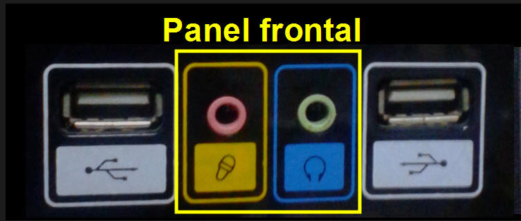
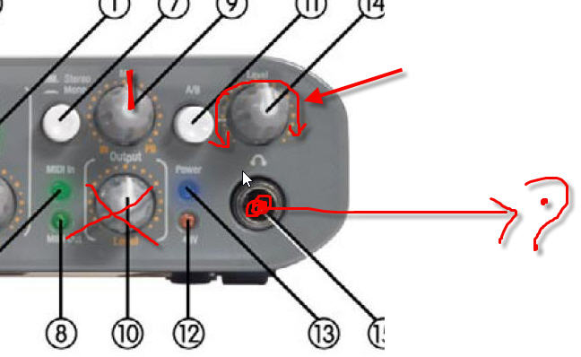
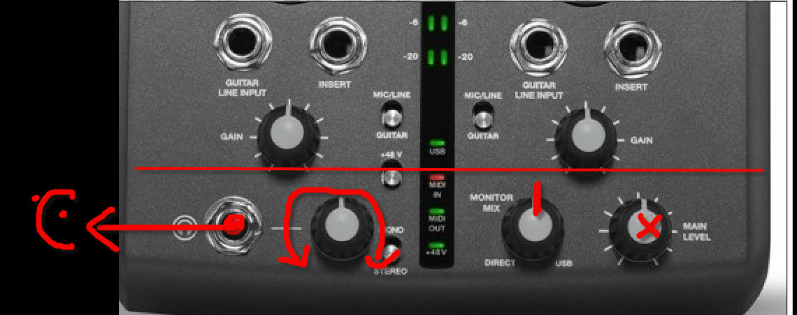

Un interfaz de audio es un dispositivo periférico del computador que se encarga de manipular señales de audio. Gracias a él podemos grabar en la computadora señales de audio de nuestras voces (a través de un micrófono) o señales que genera una guitarra o cualquier otro instrumento musical. Y por supuesto si escuchamos audio proveniente del computador es debido a este dispositivo.
Actualmente todas las computadoras cuentan con interfaz de audio incorporado en su placa principal, a este interfaz (que suele ser de calidad modesta) se le denomina "interfaz de audio integrado en la placa"
Cada computadora del aula 306 cuenta en verdad con dos interfaces de audio: El integrado y el externo.
El interfaz integrado: Lo puedes ver a través de sus paneles ubicados en la parte posterior del computador y en el panel frontal:

Los colores que ves en el interfaz no son por simple estética, pertenecen a un estándar desarrollado por la IBM y Microsoft denominado PC99, en ese estándar cada color representa una función. Verás que hay dos conectores verdes uno en el panel posterior y otro en el frontal. Pues bien, Windows suele denominar ALTAVOZ al verde que está detrás y AURICULAR al que está delante. Es fácil recordar cuál es cuál con un truquillo que comentamos en clase... ¿Recuerdas?.
También debes recordar que no todas las computadoras usan este código de colores sino aquéllas que son compatibles con IBM.
La siguiente imagen detalla los nombres y funciones de los conectores del interfaz de audio integrado en la placa:

El interfaz de audio externo: En el aula 306 contamos con dos modelos que los puedes indentificar facilmente. El fast Track y el m-Track. Sea cual fuere el que te haya tocado debes recordar que por las características de nuestro curso solamente lo utilizaremos como reproductor y no como grabador por lo que debes recordar que apenas un par de perillas debes ser capaz de controlar...
